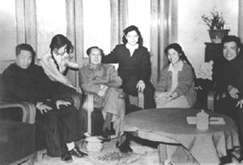
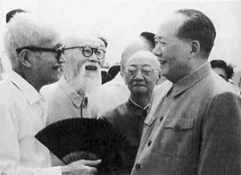
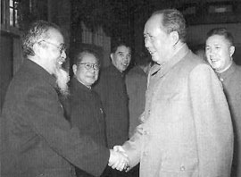
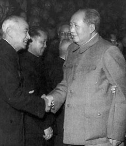
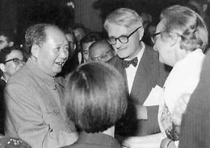
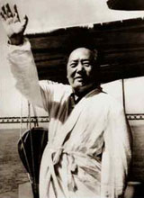
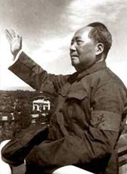
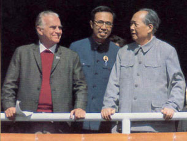

|
1961年
1月14日至18日，主持召开中共八届九中全会，号召大兴调查研究之风。这次会议正式批准了调整国民经济的八字方针。会后组织和领导三个调查组，深入浙江、湖南、广东农村调查研究。
5月21日至6月12日，主持召开中共中央工作会议，讨论修改《农村人民公社工作条例（草案）》（即农业六十条）。其中规定，取消供给制；办不办食堂，完全由社员讨论决定。
8月23日至9月16日，在庐山主持召开中共中央工作会议，讨论工业、粮食、财贸、教育等问题。会议强调切实地执行调整经济的八字方针。
9月29日，提出“三级所有，队为基础”，将农村人民公社的基本核算单位下放到生产队。
 |
1962年春，毛泽东和毛岸青等在中南海
家中。左起：毛岸青、张少林、毛泽东、刘松林、邵华、杨茂之。 |
1962年
1月11日至2月7日，主持召开中共扩大的中央工作会议（又称“七千人大会”），作关于民主集中制问题的重要讲话。
7月至9月，在北戴河、北京先后召开中共中央工作会议和八届十中全会，批判所谓“黑暗风”、“单干风”、“翻案风”，作关于阶级、形势、矛盾和党内团结问题的讲话，进一步发展了关于阶级斗争是社会主义社会的主要矛盾的错误论点。
 |
1963年7月，毛泽东和早年相识的师长、中央文史馆馆长章士钊（左一）交谈 |
 |
1963年，毛泽东会见著名哲学家冯友兰 |
1963年
2月11日至28日，召开中共中央工作会议，会议确定在农村普遍进行“四清”运动和城市开展“五反”运动。
3月5日，在《人民日报》发表题词“向雷锋同志学习”。
5月，在杭州主持制定《中共中央关于目前农村工作若干问题的决定（草案）》（简称“前十条”），作为指导农村“四清”的纲领性文件。
12月16日，听取聂荣臻关于科学技术十年规划的汇报，指出：不搞科学技术，生产力无法提高。
12月，作出关于文艺工作的第一个批示。
1964年
2月13日，召集教育工作座谈会，提出改革教育体制的设想。
5月，在听取关于第三个五年计划的汇报时，提出两个拳头（农业、国防）一个屁股（基础工业）的思想；还提出把全国划分为一、二、三线的战略布局。
 |
1964年，会见著名地质学家李四光 |
 |
1964年9月30日，毛泽东和英国著名科学家李约瑟及夫人交谈 |
6月15日和16日，观看北京、济南部队军事训练汇报表演。
6月16日，在北京十三陵召开的小型会议上，作关于培养无产阶级革命事业接班人的讲话。
6月，再次对文艺工作作批示，文艺界进而扩大到意识形态其他领域，错误地开展了过火的政治批判。
10月16日，我国第一颗原子弹爆炸成功。
12月15日至28日，主持召开中央工作会议，讨论制定《农村社会主义教育运动中目前提出的一些问题》（简称“二十三条”），部分地纠正“四清”运动中“左”的做法，但错误地提出“运动的重点是整党内那些走资本主义道路的当权派”。
1965年
5月22日至29日，重上井冈山。
7月27日，会见从海外归来的原国民党政府代总统李宗仁和夫人。
11月初，批准发表《评新编历史剧〈海瑞罢官〉》一文，揭开“文化大革命”的序幕。
1966年
3月12日，致信刘少奇，提出“备战备荒为人民”。
3月底，错误地指责由彭真主持制定的文化革命五人小组《关于当前学术讨论的汇报提纲》。
 |
1966年７月在武汉
畅游长江 |
 |
1966年8月18日在
天安门检阅红卫兵 |
5月7日，做出“五·七指示”，提出人民解放军“应该是一个大学校”，各行各业要以本业为主，“兼学别样”，“教育要革命”等。
5月16日，中共中央政治局扩大会议通过毛泽东主持制定的《中国共产党中央委员会通知》，对当时党和国家政治形势作了严重错误的估计。
8月1日至12日，主持召开中共八届十一中全会，通过《关于无产阶级文化大革命的决定》。会议期间，印发了毛泽东5日写的《炮打司令部--我的一张大字报》，不点名地批评了刘少奇、邓小平。5月的中央政治局扩大会议和这次会议的召开，是“文化大革命”全面发动的标志。
8月18日至11月26日，在北京先后八次接见来自全国各地的院校师生和红卫兵。
1967年
1月，对上海“一月革命”表示支持。此后夺权之风遍及全国。
1月23日，批示《发出中国人民解放军坚决支持革命左派群众的决定》。
2月11日和16日，谭震林、陈毅、叶剑英、李富春、李先念、徐向前、聂荣臻等不满林彪、江青一伙的倒行逆施，对“文化大革命”的错误做法提出了强烈的批评，是为“大闹怀仁堂”。毛泽东在听取了中央文革小组的汇报后，表示很不满意。
6月17日，我国第一颗氢弹爆炸成功。
7月至9月，视察华北、中南和华东地区，号召“实现革命的大联合”，指出“正确地对待干部”。
8月底，批准对中央文革小组成员王力、关锋实行隔离审查。1968年1月，又对戚本禹实行隔离审查。
1968年
1月16日，对江青等人送来的所谓“伍豪等脱离共产党启事”等材料做出重要批示：“此事早已弄清，是国民党造谣污蔑”，使他们诬陷周恩来的图谋未能得逞。
10月13日至31日，主持召开中共八届十二中全会，在极不正常的情况下，通过诬陷刘少奇并开除他的党籍的错误决定。
12月22日，“知识青年到农村去，接受贫下中农的再教育，很有必要”的指示，在《人民日报》发表，知识青年上山下乡的热潮由此开始。
1969年
4月1日至24日，主持召开中国共产党第九次全国代表大会，批准“文化大革命”的错误理论和实践，并把林彪定为“接班人”写入党章。
 |
1970年10月1日，毛泽东和斯诺在天安门城楼上。12月，在和斯诺的谈话中，表示欢迎美国总统尼克松访华，改善中美两国关系。 |
4月28日，在中共九届一中全会上再次当选为中央委员会主席。
1970年
4月24日，我国第一颗人造地球卫星发射成功。
5月20日，发表《全世界人民团结起来，打败美国侵略者及其一切走狗！》的声明。
8月23日至9月6日，在庐山主持召开中共九届二中全会，写《我的一点意见》，揭露挫败林彪、陈伯达企图抢班夺权的阴谋。
12月18日，会见美国友人斯诺，表示欢迎美国总统尼克松来华访问。 |